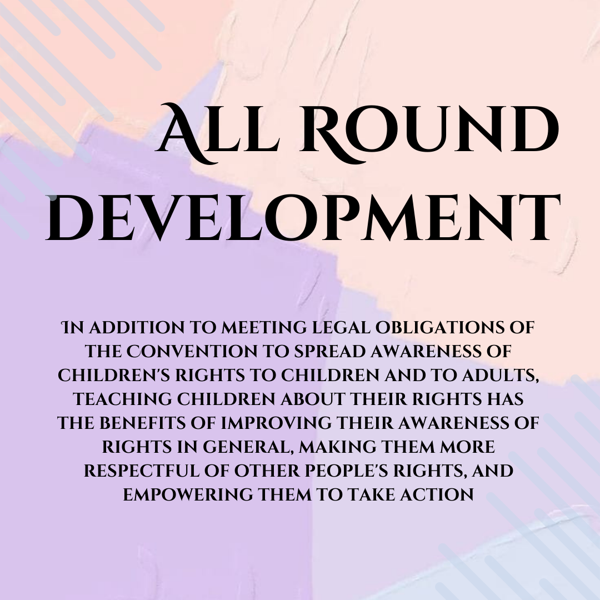
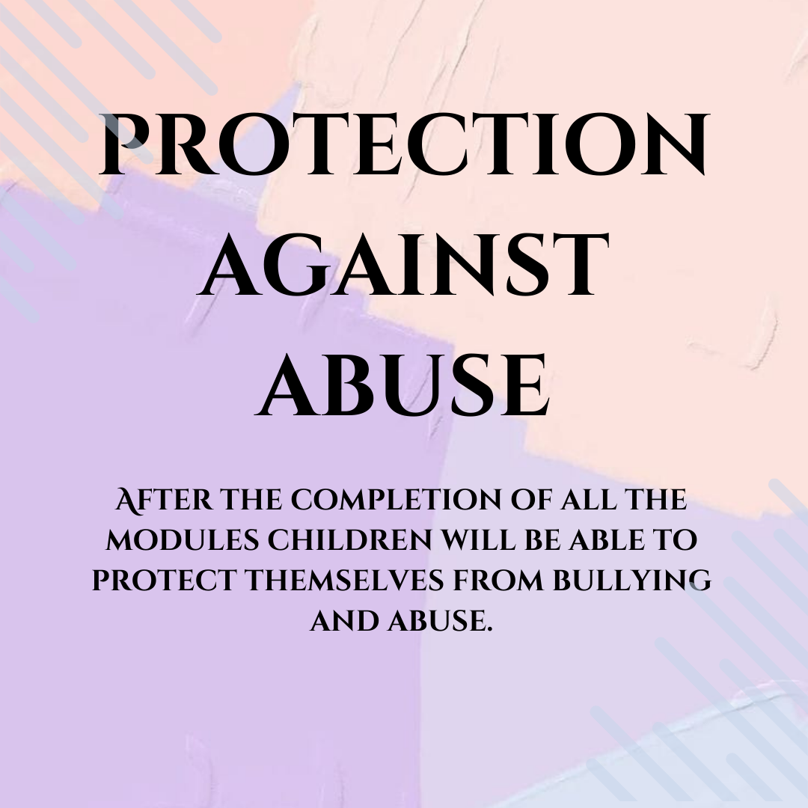

"Helping a child today will help prevent a broken adult tomorrow."
The Protection of Children from Sexual Offences Act, 2012
COURSE DESCRIPTION:
The Protection of Children from Sexual Offences Act, 2012 [“POCSO Act, 2012”] is legislation which aims at protecting children from all types of sexual abuse. Although the Convention on the Rights of the Child was adopted by the United Nations in 1989, the offences against children were not redressed by way of any legislation in India till the year 2012. It provides stringent deterrents for the commission of offences against children ranging from a minimum of 20 years of imprisonment to the death penalty in case of aggravated penetrative sexual assault.
"A child should be taught to LEARN, not forced to EARN."
Our Courses
"Education is the passport to the future, for tomorrow belongs to those who prepare for it today.” – Malcolm X
About MINISTRY OF LAW & JUSTICE
Ministry of Law and Justice is the oldest limb of the Government of India dating back to 1833 when the Charter Act 1833 enacted by the British Parliament. The said Act vested for the first time legislative power in a single authority, namely the Governor General in Council. By virtue of this authority and the authority vested under him under section 22 of the Indian Councils Act 1861 the Governor General in Council enacted laws for the country from 1834 to 1920. After the commencement of the Government of India Act 1919 the legislative power was exercised by the Indian Legislature constituted thereunder. The Government of India Act 1919 was followed by the Government of India Act 1935. With the passing of the Indian Independence Act 1947 India became a Dominion and the Dominion Legislature made laws from 1947 to 1949 under the provisions of section 100 of the Government of India Act 1935 as adapted by the India (Provisional Constitution) Order 1947. Under the Constitution of India which came into force on the 26th January 1950 the legislative power is vested in Parliament.
“By education I mean an all-round drawing out of the best in the child and man; body, mind and spirit.” ~ Mahatma Gandhi
Benifits


“You educate a man; you educate a man. You educate a woman; you educate a generation.” – Brigham Young